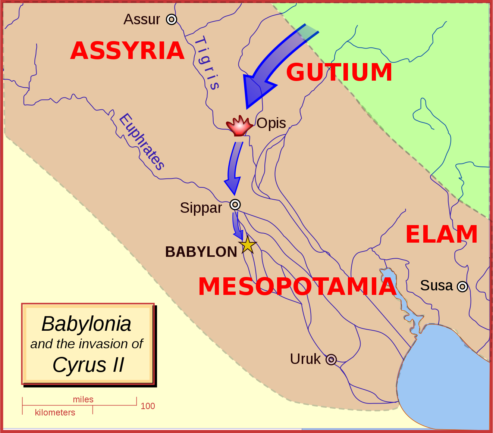
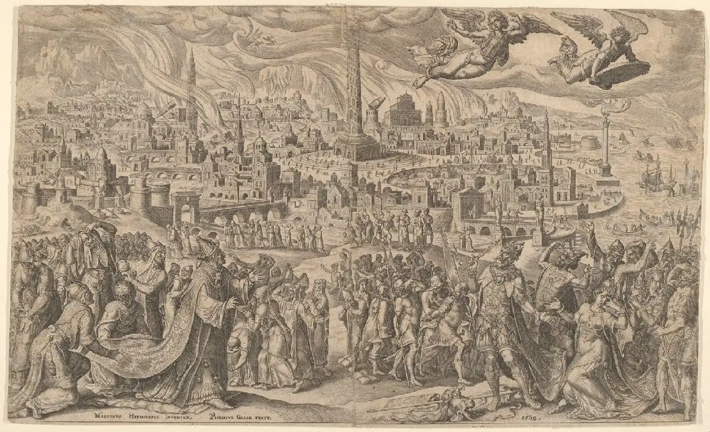

How Did the Battle of Opis Start and End?
King Nabonidus of Babylonia started the Battle of Opis in September 539 B.C.E when he sent his army to prepare for battle with Cyrus the Great and his army. They headed towards the Tigris River, where the army of Cyrus the Great was waiting at. The battle then began at a local city along the Tigris River and north of Babylon: named Opis. Cyrus the Great's army heroically defeated King Nabonidus on September 28th, three days after the war began, which livius.org mentions: “and the native population revolted against its government. Without further fighting, Cyrus marched to and captured Babylon.”
What Happened in the Battle of Opis?
After conquering Lydia, Cyrus went for Mesopotamia, specifically the Neo-Babylonian Empire. Soon, Cyrus went to war with Babylonia and in the September of 539 B.C.E, both armies met, including Cyrus and the Babylonian king Nabonidus and crown prince Belshazzar, in the city of Opis along the Tigris River. The “Persian war machine”, according to thecollector.com and worldhistory.com, drived and demolished the Babylonian army. Not just destroying the army, the Persians looted valuable goods and murdered those who repelled. This also included Nabonidus's son: Belshazzar. Shortly after the war, a riot started on Nabonidus trust, which broke out in Akkad. He won but before long, they overthrew Nabonidus, which started to lead to the fall of Babylon and the rise of the Persian Empire. Adding on, since Belshazzar died in battle, the city and area was now under Cyrus's hands.
What Was the Purpose of the Battle of Opis?
The Battle of Opis fought from the Neo-babylonian Empire and the Achaemenid Empire had an important reason for getting an abundance of loot. Opis was near the Tigris River, north of Babylon, and very close to the end of the Median Wall, which was built by Nebuchadnezzar II to protect Babylon from invasions, specifically Median invasions. Once the Persian army got control of Opis, they were able to rummage through the wall and plunder through the Babylonian capital.
How Did the Babylonians Lose the Battle of Opis?
The Babylonians lost by the sneakiness and cleverness of the Persians. Babylon's walls were impenetrable, but the Persians adroitly created a plan where they would divert the course of the Euphrates River, so it was shallow enough to be doable with. A couple days later, the residents were completely distracted by a major religious banquet, so the Persians squelched through the water and with effort, went under the wall. This sneaky and clever plan led to them effortlessly taking the city without a scrimmage. Although some ancient documents imply that the walls were in need of repair, the effort of the Persians crossing the bridge could have been less.
What Factors Contributed to the Babylonian Defeat at Opis?
As mentioned before, the Babylonian Empire fell in 539 B.C.E, one of its causes being the Battle of Opis. But the Babylonian's defeat had many factors to its defeat. First of all, the Persians as said before, had weak walls that were in need of repair. So that made it easier for the Persian army to enter the Babylonian capital. Second of all, King Nabonidus was not known and unpopular due to his religious policies under priesthood. Third of all, at the time, Babylonia was having economic problems, the major ones being famine and plague. Fourth of all, Babylonia had a geopolitical situation regarding the border because they bordered the Persian Empire on the north, east and west borders. Finally, Nabonidus was making changes to the priesthood including suppressing the cult of Marduk and centralizing the religion of Babylonia in the temple of Marduk.
How Did the Battle of Opis Impact Mesopotamia?
The Battle of Opis had a negative impact on Mesopotamia, leading to the fall of the Babylonian Empire and part of the lead to the Persian invasion of Mesopotamia. The Persians had the Battle of Opis, a battle where the Persians tried to get control of the capital of Babylonia and get major loot, which they succeeded upon. The battle had an aftermath where a revolt occurred in Akkad, which King Nabonidus let down but later got overthrew. In October 539 B.C.E, the Persian Empire eventually took over Babylon which later became a Persian satrapy. Cyrus showed himself as a traditional Mesopotamian monarch releasing political prisoners and restoring great temples.
Works Cited List
Here are the citations and resources that I used to help make this project:
- “9 Battles That Defined the Achaemenid Empire.” TheCollector, 25 Oct. 2023, www.thecollector.com/battles-achaemenid-empire/.
- “The Battle of Opis.” Ars Bellica, www.arsbellica.it/pagine/battaglie_in_sintesi/Opis_eng.html. Accessed 1 May 2024.
- Mark, Joshua J. “Ancient Persian Warfare.” World History Encyclopedia, 30 Apr. 2024, www.worldhistory.org/Persian_Warfare/.
- Mark, Joshua J. “Babylon.” World History Encyclopedia, 24 Oct. 2022, worldhistory.org/babylon/.
- Mark, Joshua J. “Persian Immortals.” World History Encyclopedia, 30 Apr. 2024, www.worldhistory.org/Persian_Immortals/.
- Msw. “Battle of Opis.” Weapons and Warfare, 3 Aug. 2019, weaponsandwarfare.com/2019/08/03/battle-of-opis/.
- Nameh, Karzar. “Battle of Opis (539 B.C) | Part I.” YouTube, 9 Dec. 2021, www.youtube.com/watch?app=desktop&v=GqWBWv-bMFo&t=19.
- “Opis.” Encyclopædia Britannica, www.britannica.com/place/Opis. Accessed 1 May 2024.
- “Opis.” Livius, www.livius.org/articles/place/opis/. Accessed 1 May 2024.
- “Oxford Languages and Google - English.” Oxford Languages, languages.oup.com/google-dictionary-en/. Accessed 1 May 2024.
- Wiki, Contributors to Historica. “Battle of Opis.” Historica Wiki, historica.fandom.com/wiki/Battle_of_Opis. Accessed 1 May 2024.